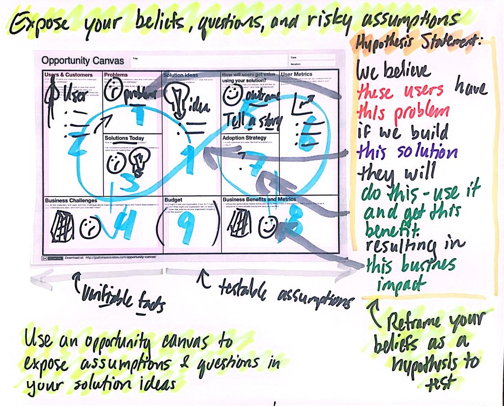

Taking Jeff Patton's Product Leadership Course
I'll never draw stick figures the same way again
Around 2010 I remember watching an Intel Commercial featuring Ajay Bhatt, co-inventor of the USB. As he walks through a crowd of fawning coworkers to get his morning coffee, the tagline pops up: “Our Rockstars Aren’t Like Your Rockstars.” Despite working in the semiconductor industry, my list of rockstars has never included Ajay. Instead, it’s filled with the likes of John Carmack and Michael Abrash, pioneers in computer graphics and virtual reality, one of my core passions.
As I discovered a new passion in Product Management, my list of rockstars grew to include product leaders who created the concepts and processes I use daily. In February, I was lucky enough to take a Product Leadership Course from one of these Leaders, Jeff Patton, author of User Story Mapping. While labeled as a Certified Scrum Product Owner (CSPO) course, the class introduced many areas of product thinking, not just agile delivery, and is one of the few such classes recommended by Marty Cagan of SVPG. Below are my thoughts on the training and personal takeaways.
Contents
Quick Links
The Course
Course Title: Passionate Product Leadership Live Online Course
Format: Virtual over Zoom. Leverages Mural extensively for collaboration
Duration: Four days at four hours per day (16 hours total)
Cost: $1695 ($1395 If you register in advance)
Pre-Work
Apart from a few videos to watch before each session, there’s no formal pre-work/advanced reading for the course. However, I strongly recommend reading The Lean Startup and User Story Mapping beforehand. Otherwise, all the topics covered may leave you feeling like you’ve just drunk from a product-spewing fire hose!
If you want to get a feel for Jeff’s lecturing style, watch his REConf 2019 talk "The Game has Changed." He repeated most of this talk on the first day of class.
Class Summary
Jumping into the Zoom meeting on day one of the four-day course, I wasn’t sure what to expect. Since the pandemic, I’ve been in my fair share of virtual training sessions, and a majority of them are little more than the presenter going through a checklist of discussion topics while deflecting questions that disagree with their main points. However, as soon as I connected to Jeff’s meeting, I knew it would be different.
Instead of a premade slide deck, His screen showed a birds-eye video feed of his desk, with sticky notes and a hand-written message welcoming everybody to the class. This format was standard throughout the entire training, with Jeff discussing topics while simultaneously drawing pictures and diagrams to explain them. It made everything more engaging than a slide deck while allowing him to hop into quick tangents as participants asked questions.
The outline on the course website is largely accurate, with our four days touching the following topics
Day One - Product Development, Structuring Product Teams
Day Two - Users and Personas, Customer Interviewing, Story Mapping, Metrics
Day Three - Vision, Product Strategy, User-focused OKRs
Day Four - Discovery, Delivery, Release Strategy
Additionally, there are a couple of things to note about the sessions:
- You will Learn by Doing
-
Interlaced throughout the training were sets of collaborative group activities. In fact, from day two onward, everybody was clustered into mini product teams tackling various tech products (our team focused on the Target app and the challenges shoppers face when items from their grocery orders are out of stock). With the aid of some very well-designed Mural boards, we were immediately able to practice newly learned concepts. The small group size meant open conversations and exposure to different perspectives.
- Managing software Delivery is a small portion of the actual class
-
Again, this is a product leadership class, not just an agile delivery class. This course will not teach you how to write intricate, verbose requirement docs that you can cleanly hand off. Instead, it will stress that the solution to many of the points of frustration a PM faces is to continually talk to customers, involve software and stakeholders early and often, and have regular, open conversations to ensure everybody is aligned.
Office hours, held at the end of each lesson, provided a great time to discuss in detail any of the day’s topics, especially if you have specific questions on how to apply them with your organization or product. I made a point to hang back every day, not just to ask my question but to learn about the challenges and insights other participants face when adopting a product mindset. Jeff scanned any sketches from the office hour and added them to our class Mural board.
Is the Class Worth Taking?
This class completely exceeded my expectations, and not just because it managed to tie South Park into a lesson on product strategy! The informal dialog, paired with activities and Zoom chat for class discussions always left me feeling like an active participant instead of just an observer. Even though I had already implemented many of the ideas being taught, it was worth it to learn from Jeff first hand, ask questions related to my specific products, and clarify some vague topics from his book. I plan to take advantage of the alumni policy and audit the course in the future.
I walked out of the training with roughly ten pages of notes, almost all of which I’d been able to put into practice during group activities, and ½ dozen new books on my “to read” backlog. I had also earned a CSPO certificate along the way. However, CSPO is a participation award (there’s no exam to confirm you learned anything). The learnings from the class were far more valuable than a certificate to pad my resume. My most significant regret is that none of my product team took the class alongside me. Alumni can retake the course for free, and I plan to pull the rest of my trio into a future session.
If you adopt product thinking in your company, bring your entire team, so everybody gets direct experience (including SWE, UX, and Leadership)! As great as Jeff’s drawings are, they are very context heavy. If you take one to your team later and go, “See, this is what we need to do!” You’ll likely get blank stares and confusion.
Learnings and Takeaways
These are my own notes and takeaways from the course, grouped roughly by concepts. They only cover a small fraction of everything that was covered during the training. You’ll notice I omitted things like “build-measure-learn” or “what is a story map” because I was already familiar with them. I strongly recommend coming into the class having read up on certain topics so you can focus on subtle details.
Focusing On Outcomes
Reviewing Shipped Features
One of the first activities was reviewing past features your team has shipped on a 2-axis plot of Outcome vs. Actual Effort. I plan to adopt this method and slowly build a cluster plot of everything we ship. It will be a great way to visualize any weak spots on our product development cycle, e.g., “Our releases are regularly larger than we’d like” or “ involving X part of the system in a release always bottlenecks us.”
- For Additional Reading
Users vs. Choosers
If you’re in B2B, it’s important to understand that the people who choose to purchase your product (customers) are not the same as the users themselves. More importantly, when the choosers are not the users, you should prioritize different metrics:
The Continuous Tech-Product Improvement Cycle
This four-quadrant graph came up regularly throughout the course to describe the cycle of iterating and improving a tech product. A lot goes on in the image, with the right half focusing on dual-track development and the left half emphasizing vision and strategy.
{kind=link}
The bottom-left quadrant stood out to me: Sense, Listen, and Learn. Effectively, you have three main sensing channels that result in new product opportunities:
Tactical - Composed of metrics, observations, and customer interactions, this is the most obvious way to improve your project.
Strategic - Your product has a vision, and it (hopefully) has a strategy to achieve that vision. This channel involves opportunities that help you hit that strategic goal.
Technological - It’s essential to be aware of new technologies that can improve your product as well as the technical debt you currently carry.
You need to maintain all three channels for a healthy product. For an analogy, imagine the human body and the following sensing channels: hunger, tiredness, and thirst. You can sleep as much as you want, but if you don't sleep or eat you'll eventually crash!
Products Composed of Products
One of the last topics of day one was “The Product Onion,” which tiered different product categories.
End Products - These product teams create solutions that address end customers and users
Customer Enabling Products - These product teams create product websites and modules. They need to service both end customers and other product teams.
Employee Enabling/Product Team Enabling products - These teams typically develop APIs that other product teams use to accomplish their jobs. They do not typically provide solutions to end customers.
{kind=link}
It’s not a perfect analogy. There are exceptions (e.g., if an API becomes public and now an Employee Enabling Product Team also supports customers), but I appreciate the separation. My team needed to navigate this when separating our end product from the back-end services that enabled it.
Personas and Interviews
A Simple Product Interview Script
While a fan of Teresa Torres' story-based Interview method to avoid cognitive bias, I understand that some people may be more comfortable interviewing with a pre-defined set of questions. This quick script is an excellent introduction to customer interviewing and lets the team hear what users think without biasing them.
Can you tell me a little bit about <Product>?
What do you use <Product> for?
What do you love about it? Can you give me an example?
What do you hate about it? Can you give me an example?
If you could wave a magic want and change anything about this product to make it better, what would it be?
Imagine you had that change, how would you use it?
How do you do things today without this capability?
- For Additional Reading
Personas and Protopersonas
A persona is an extensive (and time-consuming) distillation of customer research into a fictional person. Proto personas speed things up by leveraging assumptions about your users (which you must verify). There are loads of persona templates available, but the one we used had a photo and three categories:
About (Descriptors) - This can cover demographics, education, skills, and job roles
Behavior (Verbs) - What are some things this persona does? In our persona, “Susie” was responsible for sourcing the weekly snacks for her kid’s soccer team.
Motivations - What are the pains and problems this persona experiences, what are some rewards?
{kind=link}
I liked the mantra Differences that make a difference. aka differences in personas should affect how that persona would use your product.
Personifying a Service
The classic user story template goes: “As XXX, I want to YYY so that ZZZ,” (this should really a guideline more than than a rule). During office hours, somebody asked: “Bots consume our APIs; how do we write user stories around them?” The answer: anthropomorphic personification (something I’ve only ever heard of in the context of Discworld).
Effectively, the bot takes the user's role, and you personify it as though it was a living thing. It may work for you, it may not, but I thought it was a clever observation regardless.
Strategy
Where You will Play and How you Will Win
There’s a slew of books on product strategy; one of the more famous is Richard Rumelt’s Good Strategy/Bad Strategy. While I like the book, especially the concept of a strategic kernel, I’ll be the first to admit that it is dense and can be a slog to get through.
Here is a “cheat sheet” phrase for thinking of strategy: Where you’ll play and how you’ll win.
Where You’ll Play - Your strategy should identify and focus on a specific market, user persona, and problems you’re addressing.
How You’ll Win - You need to understand how your solution is better than alternatives, including desired outcomes and metrics.
- For Additional Reading
Customers Solve Business Problems; Product Teams Solve Customer Opportunities.
Your organization probably has goals: earn $XXX in revenue, increase the sign-up rate by Y%, etc. The thing is, product teams cannot directly solve those problems. I’m not going to open my wallet and hand money to the CEO. Likewise, unless I plan to go the route of Wells Fargo, I don’t have direct control over how many people sign up for a service.
Instead, a Product team’s job is to solve customer opportunities. When we solve a customer opportunity, we hypothesize that doing so will have a business impact, but we’re still addressing business goals through the customers. Opportunity Solution Trees are a great way to connect customer opportunities to business outcomes visually.
User-Focused OKRs
Since a product team should focus on addressing user opportunities, it makes sense that any product team using an OKR (Objective and Key Results) goal framework should have user-focused objectives, not business impact objectives. Jeff Outlined a 3-step process for making user-focused OKRs, and I’ve added two steps that help bridge the gap from business impacts to user outcomes.
If your team uses OKRs as defined by Marty Cagan, your product team is responsible for one or more business-oriented key results in a given quarter, e.g., “reduce churn by X%.”
Assuming you perform continuous discovery/regular user interviews, build an Opportunity-Solutions Tree (OST) around that metric. Prioritize this opportunity space (see chapter 7 of Continuous Discovery Habits) and hone in on one target opportunity.
Rewrite the opportunity as a quote from your target person. Humanizing the challenge helps to give it more context.
Write an ambitious statement that describes solving the opportunity. Make sure you capture the desired outcome and not a specific feature.
Identify 2-4 metrics that would show you are making progress towards solving the problem and their values that would indicate success. These are your Key Results.
Discovery and Delivery
Opportunity Canvas
Opportunity Canvases are a structured format to vet opportunities and see assumptions. I haven’t adopted it personally but may give it a test-run in the future.
{kind=link}
The Next Best Test
Tests and experiments build confidence that your features provide actual user value, but they rarely need high-fidelity prototypes or shippable code. Experiments aim to test assumptions and progress you around the build-measure-learn loop as rapidly as possible. Disqualifying multiple ideas with short experiments is better than creating an expensive prototype of your first solution.
What are we trying to Learn? |
What is the fastest way to learn it? |
|---|---|
Are we solving a meaningful customer problem? |
|
When a user sees the solution will they want to try it? |
|
Can we build our solution predictably? |
|
Can users easily learn to use it? |
|
Will users Keep using it and really get value? |
|
The above table outlines the recommended order of experiments to help rapidly build the confidence or kill a solution. Notice that the first question you should always answer is “Are we solving a meaningful customer problem.”
- For Additional Reading
Clarifying Prototype Fidelity
Inspired covers prototype fidelity in-depth: the higher a prototype’s fidelity, the less distinguishable it should be from your final software. The book also drives home to run usability tests with only high-fidelity prototypes. However, Jeff’s definition of fidelity argues that the fidelity of a prototype lies on 3-axes: visual, data, and functional. Depending on the test, a prototype should skew along one or more axes:
My own attempt at mimicking Jeff's Sharpie + Highlighter drawing style
- Testing Desirability
-
The prototype should have high visual fidelity. We’re seeing if users are even interested in our solution. For that, you don’t need full functionality or accurate data.
- Testing Feasibility
-
To answer “can we build it,” your prototype should be highly functional but doesn’t need to have accurate data or be visually appealing.
- Testing Usability
-
Usability needs to have high functional and data fidelity. Notice that it does not need to be visual. Over-prioritization of visual fidelity is a common hurdle we run into relying on tools like Figma: they look like the final product, but if the product has something like drag and drop interfaces or a drawing engine, Figma falls short or becomes expensive to prototype. A paper prototype can be just as valuable for usability testing!
Shrink Your Releases by prioritizing people, not features
We almost ran out of time for the activity that spawned this takeaway! We revisited the famous “getting ready for work” story maps we’d created earlier in the week on the last day. As a team, Jeff challenged us to update the map, assuming you had slept late and only had 15 minutes to get ready. He challenged each group to remove unnecessary stories or add alternatives to hit the deadline.
The assignment isn’t difficult when you fly solo, but since our entire team was working on one story map, there were tasks (get kids ready for school, feed the dog) that made it in even though I would not need to do them.
Despite my having neither children nor pets, they both made it into my teams "critical" story map
Jeff asked after we regrouped if anybody had irrelevant stories on their map. He then suggested, “Wouldn’t it be easy just to ignore people who have dogs or kids and focus on solving the problem well for one persona?” This point ties through to planning a product release strategy! The goal of your roadmap should be to release early, often, and provide value for a specific persona. If a release roadmap is bloated or top-heavy, the best way to clean it up is to focus on one persona and delay implementing steps/features that are irrelevant to that persona.
Release Strategy vs. Development Strategy
User Story Mapping discusses breaking up a release into multiple stages: your tracer-bullet (prove functionality), mid-game, and late game. However, I missed that this is the team's development strategy, not part of the release strategy.
Release Strategy identifies the smallest successful release that addresses a customer opportunity.
Development Strategy prioritizes the order in which the delivery team tackles stories within a release to address feasibility risks and ensure on-time delivery.
Development strategy lies in the domain of software engineers and agile delivery. It even came up that at Atlassian (creators of Jira), the Product Managers are not involved with the development strategy for that reason. While I might not go that far, I agree that once the release strategy is fleshed out, the software team knows how to build things and should have a level of autonomy.
Release to Earn vs. Release to Learn
Release to Earn is what it sounds like, production-ready that earns your company revenue. However, release to learn is software that is “Just enough to fulfill the narrative but far from feature complete.” Release to learn often involves A/B testing or releasing to a subset of users.
The concept is covered extensively in The Lean Startup. However, it’s worth noting to emphasize that delivery can be part of your discovery work while still providing incremental value to (a subset) users! It also ties back to release strategy: every release should be identified as a “release to learn” or “release to earn” release with hypothesized outcomes.